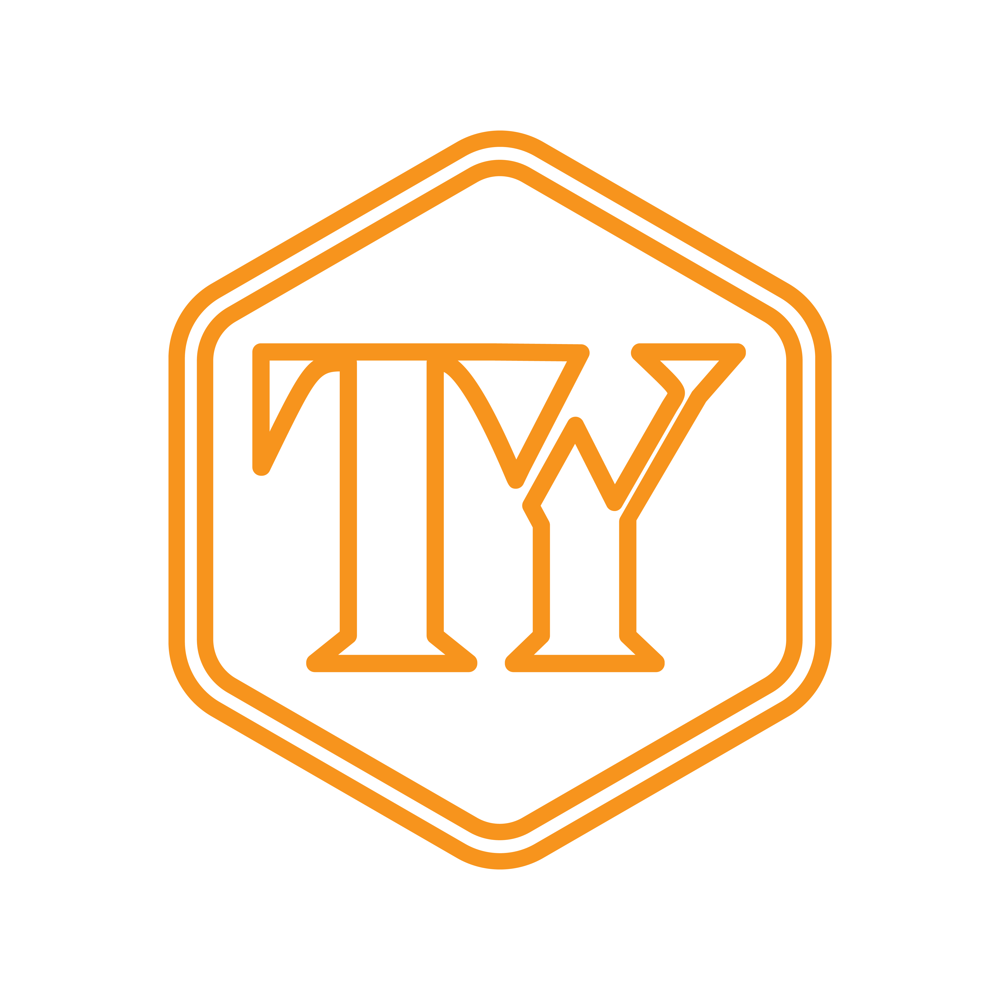

Đang chuẩn bị bài kiểm traNhập khẩu chính ngạch · New Zealand
Bài test cá nhân hóa — hệ thống phân tích và gợi ý những dưỡng chất phù hợp riêng cho bạn
Biết chính xác cơ thể đang thiếu gì để bổ sung đúng chỗ
Không mua thừa, không bỏ lỡ — đúng nhu cầu thực sự
Hiểu tại sao — không chỉ được bảo phải làm gì
Nhận thêm lộ trình chăm sóc sức khỏe riêng cho bạn
Chuyên viên TY Health sẽ liên hệ trong vòng 24 giờ với tài liệu sức khỏe được cá nhân hóa riêng cho bạn.